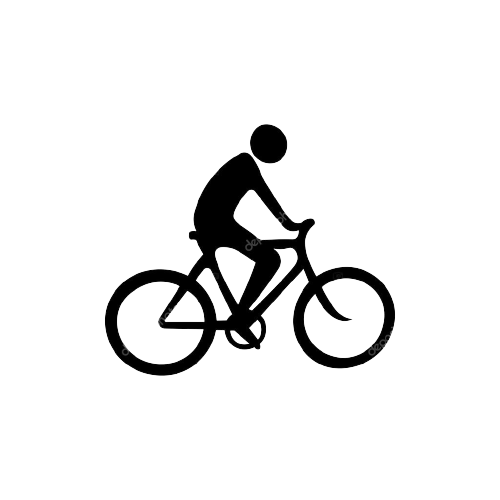

OBESITY
CHILDHOOD STATISTICS
1 IN 3
Children and
adofescents (ages 2-19)
ARE OVERWEIGHT
OR OBESE
and almost NONE meet
recommended healthy diet and
physical activity amount
An estimated
12.5
MILLION
Children (age 5 years or
younger .spend
33 HOURS / WEEK
in child care settings and
consume nearly all of their
daily calories.
OBESITY IS LINKED
TO MOVE CHRONIC
CONDITIONS THAN:
smoking
Poverty
Drinking
increasing the risk of more than 20 preventable diseases including sleep
apnea asthma heart disease. Type 2 diabetes, ostearthrits , high blood
pressure and high-cholesterol stroke
RISK FACTORS
Children in their early teens who are
obese and who have high triglyceride
levels have arteries similar to those
of 4-5 year olds.
obsese children as young as age 3
show indicator for developing heart
disease later in life.
Children who are overweight from
the ages of 7 to 13 may devlop
heart diseases as early as age 25
Obese children are twice as likely
to die before age 56 than their
slimmer peers.
FRENCH FRIES
are the most common vegetable
that children eat, comprising
25%
of their vegetable intake
JUICE
(which may luck important fibre
found in whole fruit) make up
40%
of children's daily fruit intake.
40% - 50% OF
TODDLERS
watch more television than is recommended
NEARLY 1/2 OF
PRESCHOOLERS

don't get enough physical activity.
The cost of obesity in the
united States is staggering
totaling about
$147
BILLION
CHILDREN WHO
EAT HEALTHY
FOODS AND GET
DAILY PHYSICAL
ACTIVITY HAVE:
school absences
Higher academic achievement
Higher self-esteen
Fewer behavioral problems